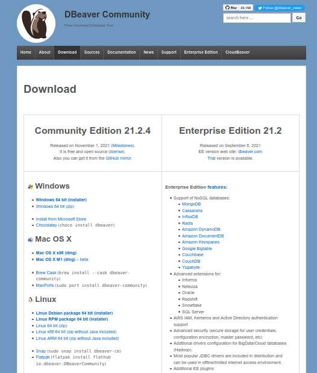
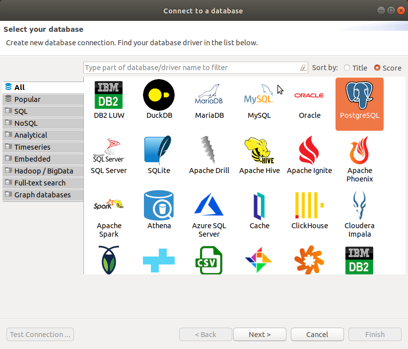
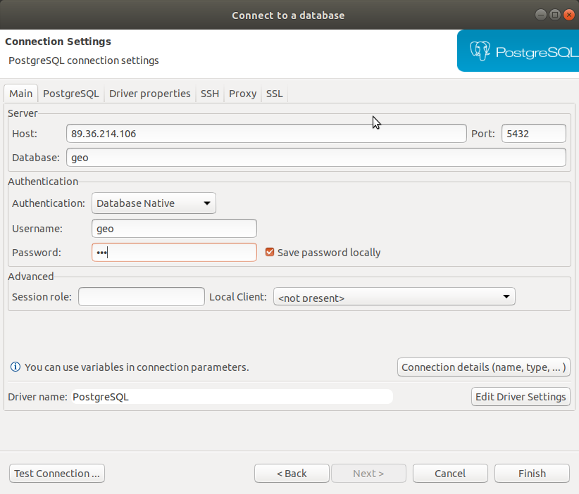
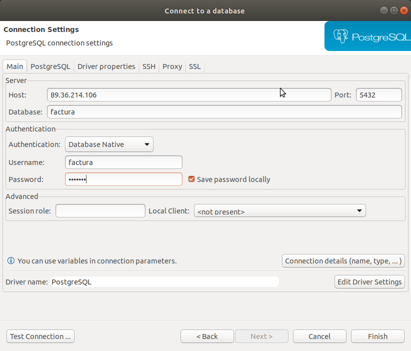
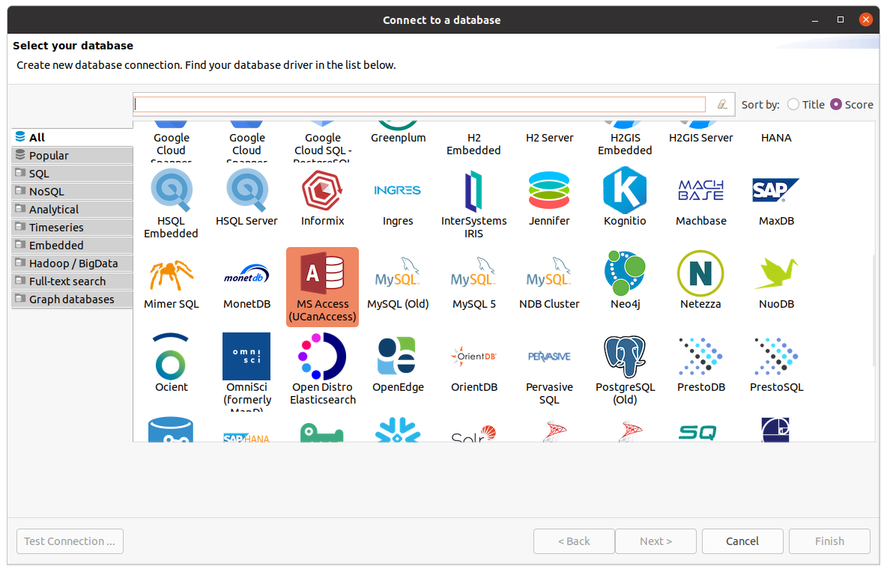
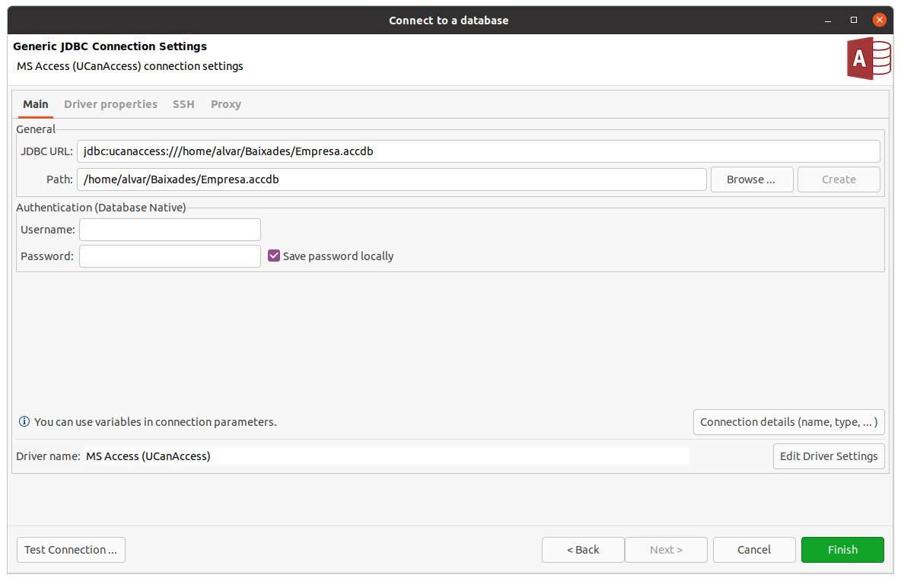

3. Client DBeaver: instal·lació i confiuració
Com ja s'ha comentat, en aquest tema utilitzarem el Sistema Gestor de Bases de Dades PostgreSQL. Aquest SGBD utilitza l'arquitectura client-servidor. Això significa que hi ha un servidor central amb el PostgreSQL instal·lat, i hi haurà molts clients que es connectaran a aquest servidor. Es pot fer des de la mateixa màquina on està instal·lat el servidor, o des d'una altra.
En el nostre cas, el servidor ja està en marxa i funcionant. Podrem accedir a ell tant des de dins de l'Institut com des de fora.
A nosaltres, per a poder connectar amb el servidor PostgreSQL ens fa falta el client de PostgreSQL.
Instal·larem DBeaver , un programa que està pegant molt fort i ens permet accedir a qualsevol Sistema Gestor de Bases de Dades molt còmodament.
En els ordinadors de l'Institut ja el tenim instal·lat. En casa us l'haureu d'instal·lar però la seua instal·lació no ofereix cap problema.
Haureu d'anar a la pàgina de DBeaver, concretament a la de Downloads: https://dbeaver.io/download/
Triarem la versió Comunity Edition , amb ella tindrem de sobres i és totalment lliure. Com veieu es pot instal·lar sense problemes en Windows, Mac i/o Linux

La versió Enterprise Edition també ens permetria accedir a moltíssimes Bases de Dades NoSQL. Com veieu molt interessant.
Com hem dit amb la versió Comunity Edition tindrem més que suficient.
Tant en Linux com en Windows tenim la possibilitat de baixar-nos un fitxer comprimit (zip o tar.gz respectivament) que només haurem de descomprimir i buscar l'executable. També tenim la possibilitat de baixar-nos l'instal·lador, que en Windows seria un executable i en Linux un paquet. Però la primera opció del fitxer comprimit ens anirà bé.
La versió en el moment de fer aquestos apunts és la 21.2.4
Una vegada feta la instal·lació haurem de fer la connexió amb el SGBD que en el nostre cas serà PostgreSQL. Però connectar a qualsevol altre SGBD seria exactament igual.
La primera vegada que arranquem el programa, segurament ens demanarà per fer la primera connexió. Arribarem a la mateixa finestra cada vegada que anem a fer una nova connexió.
Primera connexió a PostgreSQL: geo
Especificarem que volem connectar a PostgreSQL i a continuació donarem les dades de connexió, que són aquestes:
- Servidor (Host): 89.36.214.106
- Base de Dades (Database): geo
- Usuari (Username): geo
- Contrasenya (Password): geo
En aquesta Base de Dades tindrem unes taules que ens serviran per a fer els exercicis de SQL. Comentarem la seua estructura més endavant.
Aquestes són les finestres on especificaríem l'anterior:
 |
 |
|---|---|
Segona connexió a PostgreSQL: factura
Per als exercicis treballarem sobre una altra Base de Dades més completa que ens done més joc a l'hora de fer les sentències SQL. La Base de Dades s'anomena factura, i s'ha de connectar amb l'usuari factura amb contrasenya factura. Comentarem la seua estructura més endavant. Aquestes són les dades de connexió:
- Servidor (Host): 89.36.214.106
- Base de Dades (Database): factura
- Usuari (Username): factura
- Contrasenya (Password): factura
Aquestes són les pantalles on faríem la connexió:
 |
|
|---|---|
Exemple de connexió a Access: Empresa.accdb
Únicament a mode il·lustratiu anem a mostrar una altra connexió diferent a les de PostgreSQL. Com que de moment només havíem treballat amb Access , anem a intentar connectar amb la Base de Dades Empresa.accdb feta en el tema anterior.
La connexió l'haurem de fer a MS Access (UCanAccess). Després només haurem de navegar per trobar la Base de Dades Empresa.accdb
Ací presentem les pantalles per a fer la connexió:
 |
 |
|---|---|
Llicenciat sota la Llicència Creative Commons Reconeixement NoComercial CompartirIgual 3.0